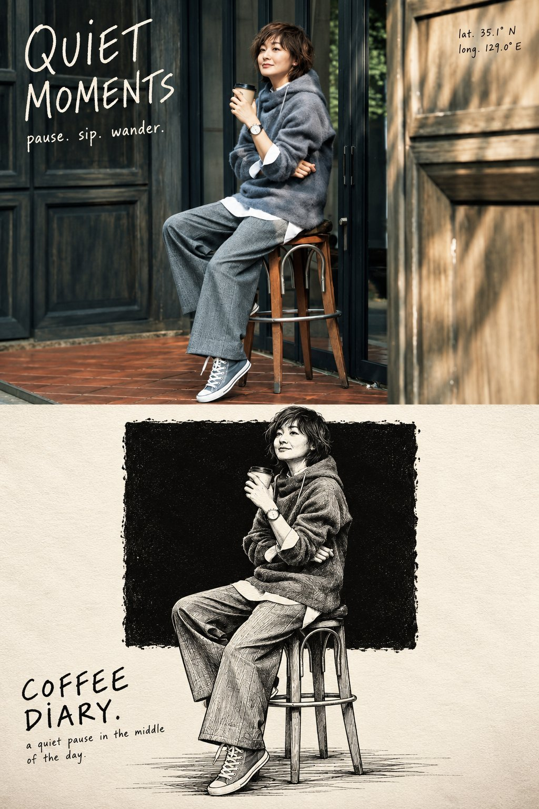
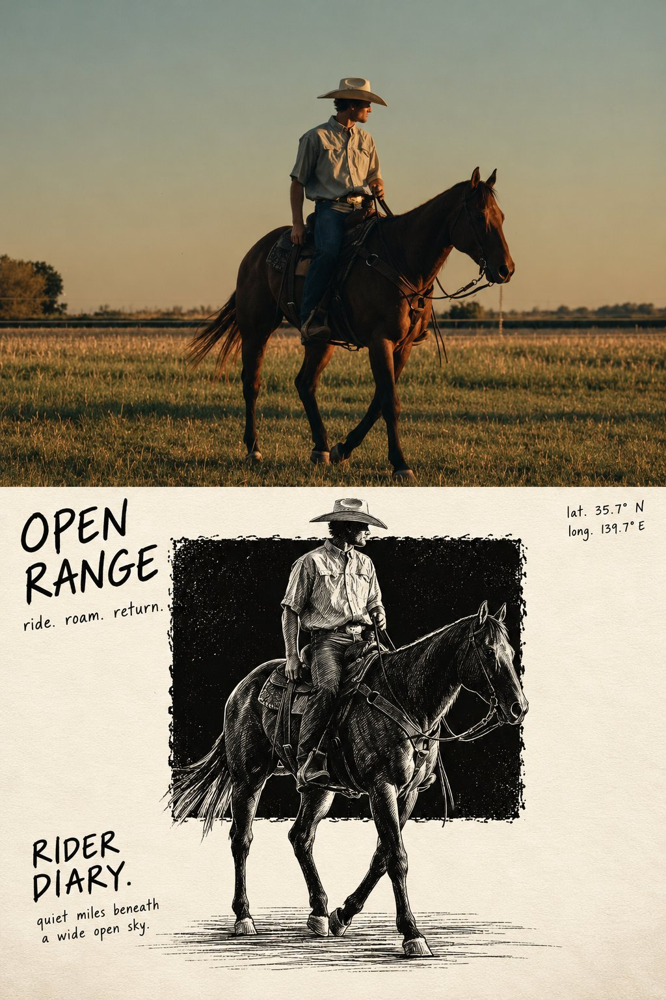

Photo to Art Poster
A couple on a carousel: the top half keeps the original photo, the bottom redraws it as a charcoal sketch poster with handwritten type.
| Creator | Harboris @harboriis |
|---|---|
| Platform | X |
| Model | GPT Image 2.5 |
| Likes | 110 |
| Posted | 2026-10-22 |
| Visual style | Cinematic realism |
| Regional vibe | American |
| Genre | Romance / youth |
| Mood | Romantic |
Prompt · from the post
Create a high-resolution, vertical 2:3 editorial art poster using the uploaded reference photo. TOP HALF: Use the original photograph full bleed, preserving the subject's identity, appearance, natural lighting, and photographic quality. Crop carefully if needed. No borders or margins. BOTTOM HALF: On textured ivory paper, create a monochrome scratchboard illustration of only the main subject and essential accessories. Place a large, rough-edged black ink block in the center. The figure must be larger than the block, with roughly two-thirds inside it and the lower third breaking out onto the ivory paper. Add loose horizontal ink strokes beneath the feet for grounding. Inside the black block, use fine white and light-grey etched linework. Outside it, continue the same figure in expressive black pen strokes on ivory. Ensure a seamless transition between both tonal styles. Avoid excessive hatching and unnecessary background details. COLORS: The bottom half must use only black, white, and ivory, with subtle paper grain. TYPOGRAPHY: Use rough, upright handwritten lettering. - Top left: a 2 to 4 word title across two lines, followed by three short lowercase verbs separated by periods. - Top right: latitude and longitude on two lines only. - Bottom left: the location or theme followed by “DIARY.”, with a short descriptive sentence beneath. - Keep all typography black on ivory, natural and imperfect, never cursive. FINAL COMPOSITION: Exactly one standalone poster with two equal horizontal halves and one perfectly straight dividing line. Preserve the original subject's identity and proportions. Maintain generous negative space and a restrained, collectible editorial aesthetic, combining documentary photography with expressive hand-printed illustration. Print quality, 2:3 vertical aspect ratio.